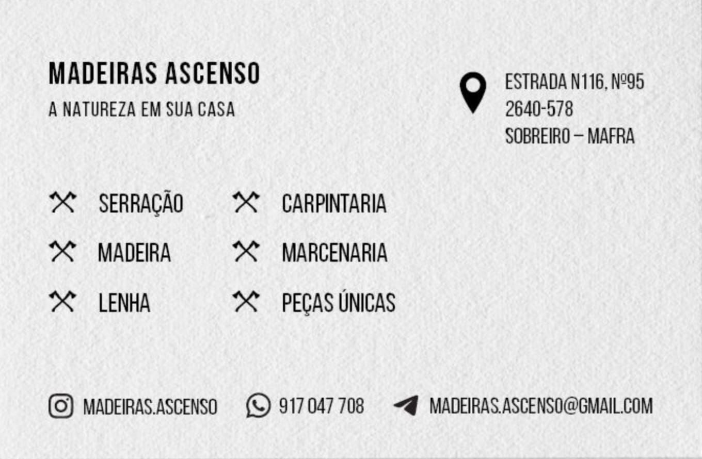

Serração
Corte e preparação de madeira para obra, construção, estruturas e projetos à medida.
Madeira com origem, mãos e medida
Em Sobreiro, Mafra, a Madeiras Ascenso junta serração, carpintaria e marcenaria num serviço próximo, pensado para quem procura madeira honesta, acabamentos cuidados e soluções feitas com tempo.
Serviços
Corte e preparação de madeira para obra, construção, estruturas e projetos à medida.
Execução de soluções em madeira para interiores, exteriores e necessidades específicas.
Peças trabalhadas com detalhe, proporção e acabamento para espaços com carácter.
Seleção de madeiras e materiais para diferentes aplicações, com aconselhamento direto.
Lenha preparada para aquecimento, lareiras e uso doméstico.
Elementos singulares em madeira para decoração, mobiliário e projetos personalizados.
Identidade local
O trabalho começa na escolha da matéria-prima e termina numa peça pronta a viver no seu espaço. Sem ruído, sem excesso, só madeira bem tratada.

Contactos